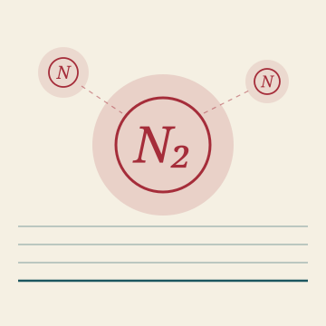

Het Open Vizier · Nitrogen edition
A newspaper for thinking without blinkers

★ Nitrogen edition
The Dutch nitrogen crisis is not a self-contained problem. It is a junction of manure surplus, methane emission, soy dependency and farming morality. This edition brings together sixteen articles that approach the crisis from four angles — the architecture, the diagnosis, the system, and the geography of what moves.
★ I · The architecture
Three steering articles that elaborate the Carbon-Alert route — for the Netherlands, for Germany, for Brussels. One architecture, three geographies, three political voices.
Research & analysis · NL · 9 July 2026
The manure norm hits 3,500 Dutch farmers with € 215 mn buyouts. A third option waits on the same buffer zones: three plants, one field, farmer and nature both forward.
Read the analysis →Steering article · NL · June 2026
Nitrogen, methane, soy imports and farm income — four crisis points that The Hague turns into three separate dossiers. One production architecture solves them simultaneously.
Read the steering article →Steering article · DE · June 2026
285,000 hectares of winter rapeseed in Brandenburg and Mecklenburg-Vorpommern. Carbon-Alert offers a factor of four to eight on farm income and a factor of four to seven on subsidy effectiveness.
Read the German sister article →Steering article · EU · June 2026
Two million hectares on the European rapeseed area. A quarter to a third of European agricultural climate emissions resolved — for less than half a percent of the CAP budget.
Read the European sister article →★ II · The diagnosis
Six articles that show where the nitrogen approach gets stuck — with the farmer, in Brussels, in the forests, and in the soil itself. The consequence map as a diagnostic instrument.
Diagnosis · Netherlands
How nitrogen policy simultaneously exhausts the Dutch farmer and the Dutch landscape — without truly protecting either.
Read the diagnosis →Diagnosis · Brussels
The European variant: how the CAP and the Nature Restoration Law push the European farmer into an impossible bind, while the real solutions are on the table.
Read the European version →Consequence map · manifesto
An instrument for testing every policy measure against its consequences — for people, animals, soil, water, climate and economy. What a consequence map is, how it is read, and why Europe needs one.
Read the manifesto →Consequence map · BiCRS version
The consequence map applied to BiCRS (Biomass-with-Carbon-Removal-and-Storage). What changes if we no longer burn biomass but sequester carbon?
Read the BiCRS version →Consequence map · silent analysis
The third consequence map in the series — a quiet examination of the Dutch nitrogen policy toolkit, without rhetoric, with numbers.
Read the silent analysis →Manifesto · counterpoint
A counter-manifesto: European agricultural policy is often told as a map of damage. Here the other map — what already works, what is possible, and who is building it.
Read the counter-manifesto →Diagnosis · press and methane · from Edition 5
How the FD inverts the weight of methane three times in one week — small where it is large, large where it is small. A diagnosis of the instrument by which the nitrogen crisis is sold to the public.
Read the methane diagnosis →★ III · The system
Four articles that expose the pattern — the autoimmune disease of Brussels and The Hague, the methodology of adaptation, and the role of the actor in its own system.
Diagnosis · system failure
A government that attacks its own productive tissue — farmer, landscape, food system — while claiming to protect them. Diagnosis of a political pathology.
Read the diagnosis →Diagnosis · Brussels
The same pattern, one floor higher. How European institutions reject their own productive tissue — and thereby grow poorer.
Read the European variant →System · principle
Whoever acts, creates the rule. A principle that many policymakers forget — and that explains why their paper rules never get a grip on reality in practice.
Read the principle →Methodology · ground rule
How a system adapts when it begins to breathe again. A ground rule for those who want to bring the nitrogen architecture into practice — beyond abstraction, close to the ground.
Read the methodology →★ IV · The geography
Three articles from Edition 5 that touch on nitrogen at a different level — the plant that moves, the seven tools that made the difference, and the demand we place on the reader who follows along.
Edition 5 · July 2026
A Dutch scientific account of plant migrations in a changing nitrogen and temperature context. What we do, what they do, and where it ends up.
Read the Edition-5 article →Edition 5 · July 2026
Seven tools with which the Carbon-Alert architecture was built — from cell-wall research to Juncao breeding. The instruments that made the difference.
Read about the seven →Edition 5 · July 2026
We ask something of you. Not that you believe everything, not that you criticise nothing — but that you read along with the intention of understanding something. A brief statement of reading pitch.
Read the demand on the reader →For politicians and policymakers: this edition is not a lobby against nitrogen policy. It is the concrete answer to the question that policy leaves open — broken down into architecture, diagnosis, system and geography.
For farmers: a fourth option alongside quitting, arable farming or extensifying. A cash crop with preservation of grassland and a realistic gross income of £7,500 to £12,000 per hectare per year — a factor of two to three higher than today.
For dairy buyers: your EUDR and scope-3 route. Local protein production, validated under Dutch conditions, scalable to a substantial share of soy imports.